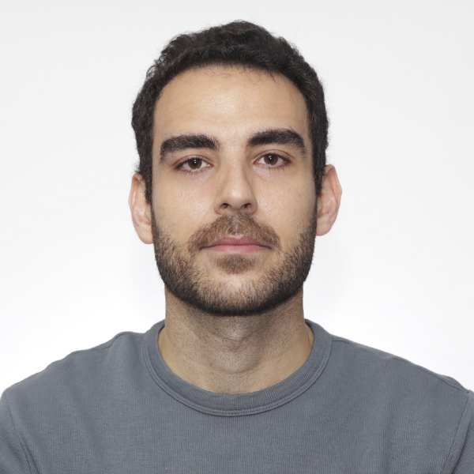

Mohamad Farahani
MASc. Biomedical Engineering
📍 Based in Canada · Open to relocation :)
AI/ML Engineer · Data Scientist · Biomedical Engineer
I build and deploy production-ready AI systems for healthcare, finance, and enterprise workflows with reliable inference, retrieval, and model orchestration.
$ python profile.py
{
"role": "AI/ML Engineer",
"domain": "healthcare, finance",
"deployments": "Azure, Databricks, local CPU",
"stack": ["Ollama", "OpenAI", "Azure", "Agents"],
"impact": "25% better performance",
"status": "shipping useful AI"
}
# research-driven, product-minded, deployment-aware
01 / About
I enjoy building AI systems that move from notebooks to real users, with strong architecture, measurable outcomes, and practical deployment thinking.

MASc. Biomedical Engineering
📍 Based in Canada · Open to relocation :)
I’m an AI/ML Developer and Data Scientist working across generative AI, biomedical machine learning, computer vision, data engineering, and GPU-accelerated signal processing.
My recent work includes RAG assistants, voice-enabled agents, finance-document intelligence, local LLM inference, biomedical estimation models, and automated ETL pipelines.
I ship systems on Azure OpenAI, Databricks, Ollama, and local quantized Qwen stacks, balancing reliability, auditability, and measurable business or clinical impact.
Beyond the screen: When I'm not building machine learning pipelines, I maintain a highly disciplined daily weightlifting routine, study French grammar and phonetics as I work toward a B2 proficiency level, and spend time outdoors cycling and hiking local favorites like the Skyline trail.
02 / Core stack
Deploying retrieval-augmented agents, prompt pipelines, tool orchestration, and fail-safe API fallback for production assistants.
Clinical signal modeling, production training loops, validation workflows, and GPU-accelerated performance optimization.
Databricks ETL, Azure-hosted APIs, reproducible data pipelines, and delivery for production ML workloads.
03 / Experience
Independent Contractor
BRAEBON Medical Corporation
University of Ottawa
04 / Projects
End-to-end Databricks pipeline for ingesting, cleaning, and modeling high-velocity streaming data via Medallion Architecture.
Turning raw weather JSON into actual forecasts before it rains.
RAG assistant that retrieves evidence, synthesizes findings, and cites source documents.
For those “I definitely read that somewhere” moments.
Voice agent with speech recognition, tool orchestration, and calendar integration.
Hears the user, calls backend tools, and avoids repeated prompts.
Hybrid retrieval assistant for financial documents with source-cited answers.
Keeping teams from chasing the wrong page in quarterly reports.
05 / Credentials
06 / Publications
07 / Contact
I’m interested in applied AI, generative AI, data science, healthcare AI, and production ML opportunities.